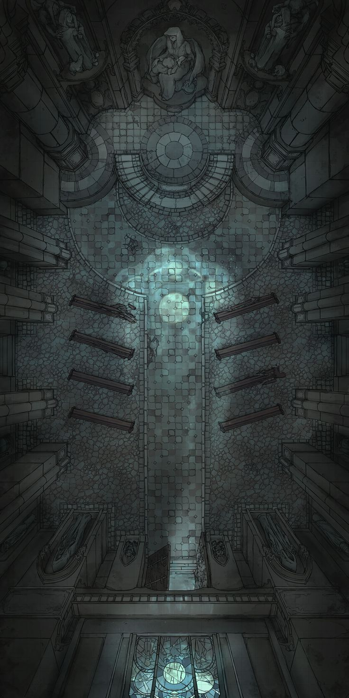
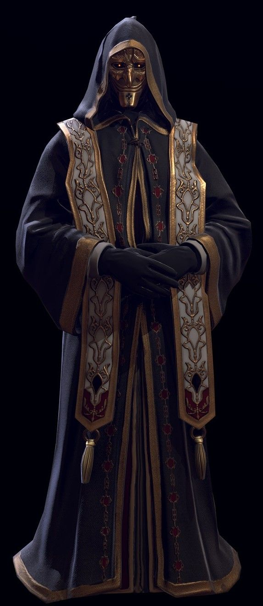

Una antigua catedral dedicada a una divinidad olvidada fue consumida por una llama sobrenatural. Entre las ruinas permanece el Obispo de Ceniza, un sacerdote corrompido que fusionó su alma con el fuego sagrado.
Como Clérigo Enano del Dominio de la Vida nivel 7, debes atravesar la nave principal y derrotarlo antes de ser consumido por las llamas eternas. Utiliza tus hechizos de curación, tu dominio divino y tu fe inquebrantable para purificar este lugar sagrado.


Has derrotado al Obispo de Ceniza y purificado la Catedral de las Cenizas. Las llamas eternas se apagan y la paz retorna a este lugar sagrado.
Las llamas eternas te consumen. Tu fe no fue suficiente para purificar la Catedral de las Cenizas...